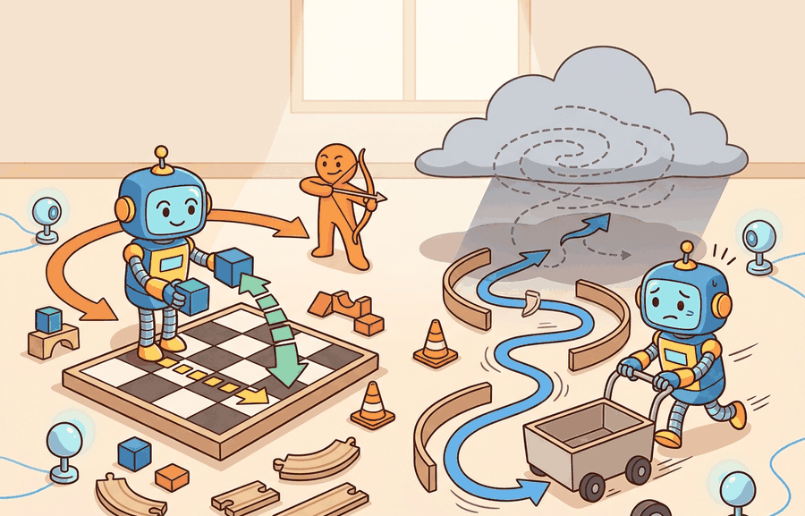

"A holonomic robot forgets its history; it can always step sideways. A non-holonomic robot is a prisoner of its own path."
A Differential Geometer on Wheels

Holonomic vs. non-holonomic motion is one lens on kinematics and robot motion. We study it because an embodied agent needs decisions that survive contact with noisy sensors, delayed effects, and changing environments.
This section develops the technical contract for Holonomic vs. non-holonomic motion into a usable mental model. First we define the object of study, then we connect it to the agent loop, then we test it with a compact implementation.
The key question in Holonomic vs. non-holonomic motion is practical: what must the agent know, what can it observe, what action is available, and what evidence shows that the action worked under the stated conditions?
A representation earns its place when it changes the measurable action interface. In Holonomic vs. non-holonomic motion, the reader should keep asking which decision becomes easier, safer, or more reliable.
Consider what happens when a warehouse robot needs to slot itself into a narrow bay that is directly to its right. A holonomic platform (such as a mecanum-wheeled base or a quadrotor) can simply command a rightward velocity and arrive. A differential-drive robot cannot: it must execute a multi-step maneuver, combining forward motion, rotation, and forward motion again, even though the target is centimeters away laterally. This is not a software limitation; it is a consequence of the robot's physical constraint structure, and every layer of the planning stack must respect it or produce trajectories the robot cannot follow.
Theory
For Holonomic vs. non-holonomic motion, the practical design rule is to make the interface inspectable before optimization begins: inputs, outputs, units, latency, bounds, and failure labels should all be visible in the saved artifact.
A holonomic constraint removes reachable configurations. It can be written as $g(q)=0$, such as a gripper fingertip constrained to remain on a rail. A non-holonomic constraint removes instantaneous velocities without reducing the same number of configurations, so it is usually written as $A(q)\dot q=0$ and must be handled during motion planning.
The difference is practical, not semantic. A mobile robot with wheels cannot move sideways instantaneously, but it can still reach a sideways parking spot by combining forward motion and turning. A planner that treats that constraint as a simple position bound will generate paths the robot cannot execute.
The mechanism in Holonomic vs. non-holonomic motion is the contract between representation and action. Name what enters the module, what leaves it, which assumptions make that transformation valid, and which log would reveal a bad handoff.
Worked Example
The example rolls out a unicycle (differential-drive) base and checks the no-side-slip Pfaffian constraint $-\sin\theta\,\dot x+\cos\theta\,\dot y=0$ at every step. The robot never moves sideways instantaneously, yet a forward-then-turn-then-forward maneuver still lands it at a laterally displaced pose, which is the operational signature of a non-holonomic constraint.
import numpy as np
def step(state, v, omega, dt):
x, y, th = state
return np.array([x + v*np.cos(th)*dt,
y + v*np.sin(th)*dt,
th + omega*dt])
def slip(state, v, omega):
"""Pfaffian residual A(q) q_dot; must stay ~0 for a non-holonomic base."""
x, y, th = state
xdot, ydot = v*np.cos(th), v*np.sin(th)
return -np.sin(th)*xdot + np.cos(th)*ydot
dt = 0.01
# Command sequence: drive, turn in place, drive, turn back -> net sideways shift
commands = [(1.0, 0.0, 1.0), # forward 1 s
(0.0, np.pi/2, 1.0), # rotate +90 deg
(1.0, 0.0, 1.0), # forward 1 s
(0.0, -np.pi/2, 1.0)]# rotate -90 deg
state = np.array([0.0, 0.0, 0.0])
max_slip = 0.0
for v, omega, T in commands:
for _ in range(int(T/dt)):
max_slip = max(max_slip, abs(slip(state, v, omega)))
state = step(state, v, omega, dt)
print("max instantaneous side-slip:", f"{max_slip:.2e}") # ~0: constraint holds
print("final pose (x, y, theta) :", np.round(state, 3))
# Net y-displacement is reached WITHOUT ever commanding lateral velocity.
A planner that treats "cannot slip sideways" as a position bound would reject the goal; the rollout shows the goal is reachable through a legal velocity sequence, which is exactly why a velocity-level constraint must live inside the local planner, not in the configuration test.
The TurtleBot 3 and Clearpath Husky are differential-drive: non-holonomic. The KUKA youBot and many warehouse AMRs use mecanum wheels: holonomic. Aerial platforms such as the Crazyflie quadrotor are holonomic in translation (they can hover sideways) but underactuated in the full 6-DOF sense (they cannot independently command all six wrench components). Knowing the constraint class before writing a planner determines whether OMPL's RRT-Connect or a kinodynamic variant such as SST is the correct starting point.
The fragment should expose which velocities are allowed and which are constraints. OMPL and MoveIt 2 can plan at scale, but the small model shows why a car-like robot cannot execute an arbitrary sideways path.
Practical Recipe
- Write the observation, action, and success metric before choosing a model.
- Build a baseline that is simple enough to debug by inspection.
- Add the library implementation only after the baseline behavior is understood.
- Record failures as structured cases: perception error, state error, planning error, control error, or evaluation error.
- Run at least one perturbation test before trusting the result.
The common mistake in Holonomic vs. non-holonomic motion is to celebrate the component score before checking the closed-loop handoff. The failure usually appears at the boundary: stale state, wrong frame, delayed action, saturated actuator, or metric that ignores the real task cost.
A robotics team using Holonomic vs. non-holonomic motion should log not only final success, but intermediate observations, chosen actions, controller status, and recovery events. The logs reveal whether the method is solving the task or merely passing the easiest episodes.
When holonomic vs. non-holonomic motion feels abstract, ask what would be different in the next frame of video, the next robot state, or the next safety margin.
For Holonomic vs. non-holonomic motion, treat frontier claims as hypotheses until they expose enough detail to reproduce the result: data boundary, embodiment, controller interface, evaluation panel, and failure cases.
Can you name the observation, state estimate, action, success metric, and most likely failure mode for Holonomic vs. non-holonomic motion? If not, the system boundary is still too vague.
Production Pattern
Holonomic vs. non-holonomic motion sits inside the Part II robotics contract: geometry defines where things are, kinematics defines what motion is possible, dynamics defines what motion costs, control defines how errors are corrected, and sensing defines what the agent can know on time.
State non-holonomic constraints as forbidden instantaneous velocities, not as vague limits on motion. This makes the section useful to students, builders, and researchers at the same time: the idea has an intuitive role, a formal interface, a runnable check, and a failure mode that can be reproduced.
For Holonomic vs. non-holonomic motion, kinematics maps joint or body motion into task-space motion without explaining forces. Preserve joint limits, frame conventions, velocity units, and singularity margins in the artifact.
| Tool or Library | What It Handles | Verification Check |
|---|---|---|
| Pinocchio | computes articulated-body kinematics, dynamics, and derivatives | Verify model frames, joint ordering, and derivative convention against the URDF. |
| Robotics Toolbox for Python | supports practical work on Holonomic vs. non-holonomic motion | Verify the library output against the hand-built baseline on one small case. |
| MoveIt 2 | supports practical work on Holonomic vs. non-holonomic motion | Verify the library output against the hand-built baseline on one small case. |
| Drake | models dynamical systems, multibody plants, optimization, and controllers | Verify scalar type, plant finalization, frame convention, and solver status. |
| ROS 2 control | supports practical work on Holonomic vs. non-holonomic motion | Verify the library output against the hand-built baseline on one small case. |
Use this recipe when turning Holonomic vs. non-holonomic motion into code, a simulator experiment, or a robot diagnostic. The point is not to use every library. The point is to keep the hand-built baseline and the maintained-tool path comparable.
- Write the joint vector, frame target, velocity convention, and constraint set before solving.
- Check forward kinematics on a known posture, then perturb one joint and inspect the end-effector delta.
- Compare an analytic or numerical Jacobian with Pinocchio, Robotics Toolbox, or Drake on the same robot model.
- Log residual error, joint-limit distance, manipulability, and solver iteration count in one artifact.
- Treat singularities and infeasible targets as design signals, not as solver annoyances.
For Holonomic vs. non-holonomic motion, compare methods only through one saved artifact that preserves the inputs, outputs, units, timestamps, latency budget, configuration, seed, metric definition, and failure labels relevant to this section. The comparison is meaningful only when the same script evaluates the same panel.
Extend the section exercise by adding one perturbation specific to Holonomic vs. non-holonomic motion and one latency or uncertainty check. Save the result in the EvidenceRecord schema, then explain which library output you trust and why.
Kinematic failures often arrive as a plausible pose with an impossible motion. Inspect whether the constraint is configuration-level or velocity-level before blaming the planner. For this section, first reproduce one tiny motion primitive by hand, then rerun it through Robotics Toolbox for Python, Drake, ROS 2 navigation tools, or a custom NumPy integration. If the two disagree, inspect conventions and timing before changing the model.
Technical Core
Holonomic vs. non-holonomic motion needs a topic-native core: variables, equations or system contracts, an algorithmic procedure, an expected output, and a failure diagnosis. Figure 5.2.T summarizes the chain this section must preserve when moving from a teaching example to a real embodied system.
$g(q)=0\quad\text{for holonomic constraints},\qquad A(q)\dot q=0\quad\text{for non-holonomic velocity constraints}$
For a differential-drive base with state $(x,y,\theta)$, the no-side-slip constraint can be written $-\sin\theta\,\dot x+\cos\theta\,\dot y=0$. It forbids lateral velocity in the robot frame while still allowing sideways displacement through a sequence of legal motions.
- Write the proposed restriction as either a condition on $q$ or a condition on $\dot q$.
- Check whether the velocity condition can be integrated into a configuration equation $g(q)=0$.
- If it cannot, keep it inside the local planner, controller, and rollout simulator instead of treating it as a static obstacle.
- Validate with a short maneuver that reaches a displaced pose without violating the instantaneous velocity constraint.
| Contract Field | What To Specify | Why It Matters |
|---|---|---|
| State and observation | Variables, units, timestamps, frames, and uncertainty. | Prevents a model score from being mistaken for robot capability. |
| Action interface | Command type, limits, update rate, and safety fallback. | Makes the learned or planned output executable. |
| Evidence artifact | Trace, metric, configuration, seed, and failure label. | Allows baseline and library path to be compared in one pass. |
| Tool path | Modern Robotics, Pinocchio, Drake, ROS 2 tf2, MoveIt, NumPy | Shows the practical library route after the mechanism is understood. |
Expected output is a trajectory whose sampled velocities satisfy $A(q)\dot q\approx 0$ at each step, even when the final displacement looks sideways in the world frame. A path that reaches the goal but violates the velocity constraint is a drawing, not an executable plan.
A non-holonomic planner fails when it interpolates directly between poses, commands lateral velocity to a wheeled base, or validates only endpoint geometry while ignoring the velocity field along the path.
Section References
Core references for Holonomic vs. non-holonomic motion: Modern Robotics; Murray, Li, and Sastry; Siciliano et al.; LaValle; and official documentation for Drake, MuJoCo, Pinocchio, CasADi, python-control, GTSAM, ROS 2, and OpenCV as applicable.
Use these references to check notation, frame conventions, units, solver assumptions, and maintained-library behavior.
Holonomic vs. non-holonomic motion is useful when it makes the perception-action loop more reliable, not when it merely adds a more impressive model name.
Design a method-matched experiment for Holonomic vs. non-holonomic motion. Specify the environment, observations, actions, metric, one perturbation, and the library output you would compare against the hand-built baseline.